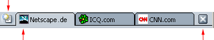

Dieses Dokument
wird von Netscape nur zu Ihrer Information bereitgestellt. Es soll Ihnen helfen,
bestimmte Schritte zum Schutz der Privatsphäre und Sicherheit Ihrer persönlichen
Informationen im Internet auszuführen. In diesem Dokument werden jedoch nicht
alle Fragen der Onlineprivatsphäre und -sicherheit behandelt. Außerdem möchte
Netscape in diesem Dokument keine Empfehlung abgeben, was einen angemessenen
Schutz der Privatsphäre und der Sicherheit im Internet darstellt.
Anpassen von Netscape
Mit Funktionen wie Meine Seitenleiste, Lesezeichen und
Registerkarten können Sie Netscape Ihren Bedürfnissen entsprechend anpassen.
In diesem Abschnitt werden die
anpassbaren Funktionen der Browser-Komponente Navigator von Netscape
beschrieben.
Meine Seitenleiste
Was ist "Meine Seitenleiste"?
Meine Seitenleiste ist ein benutzerdefinierter Bereich
im Browser, in dem Sie die Objekte speichern können, die Sie immer wieder
verwenden – die neuesten Nachrichten, den Wetterbericht, das Adressbuch oder
Ihre Buddy-Liste, Aktienkurse, einen Kalender und viele andere Optionen. In Meine Seitenleiste werden diese
Objekte als Einträge angezeigt, die ständig aktualisiert werden.
In Netscape sind
einige Einträge bereits unter Meine Seitenleiste eingerichtet, doch Sie können Meine Seitenleiste durch
Hinzufügen, Entfernen und Neuanordnen von Einträgen anpassen.
[ Zurück zum Anfang des
Abschnitts ]
Verwenden von "Meine
Seitenleiste"
Wenn Sie Meine Seitenleiste nicht schließen , ist sie immer auf der
linken Seite des Browsers geöffnet. So zeigen Sie einen Eintrag an:
- Klicken Sie auf den Titel eines
Eintrags, beispielsweise auf das Wort Suche. Der Eintrag Suche wird geöffnet und Sie können nach Webseiten
suchen.
 |
Meine Seitenleiste
Griff |
|
Wenn Meine Seitenleiste nicht angezeigt wird, ist sie
möglicherweise geschlossen. So öffnen Sie Meine Seitenleiste:
- Bewegen Sie den Mauszeiger
am linken Rand des Netscape-Fensters auf und ab. Der Zeiger verwandelt
sich in eine Hand, sobald er den "Griff" von Meine Seitenleiste berührt.
- Klicken Sie auf den Griff,
um Meine Seitenleiste zu
öffnen.
Anmerkung: Wenn Meine Seitenleiste im Menü Anzeigen von Navigator
nicht ausgewählt ist, werden der Rahmen und der Griff nicht
angezeigt. |
Tipp: Wenn Sie einen Eintrag aus Meine Seitenleiste neu laden
möchten, klicken Sie mit der rechten Maustaste auf den Titel des
Eintrags und klicken Sie im Popupmenü auf Neu laden:
[ Zurück zum Anfang des
Abschnitts ]
Hinzufügen von Einträgen zu
"Meine Seitenleiste"
So fügen Sie eine neuen Eintrag
hinzu:
- Klicken Sie auf Einträge oben in Meine Seitenleiste und klicken
Sie im Menü auf Seitenleiste
anpassen.
- Wählen Sie im Fenster Meine Seitenleiste anpassen
einen Eintrag in der Liste auf der linken Seite aus. Doppelklicken Sie
auf den Ordner, um ihn zu öffnen oder zu schließen.
- Klicken Sie auf Hinzufügen.
- Sie können beliebig
viele Einträge hinzufügen.
- Klicken Sie auf OK, wenn Sie fertig sind.
Anmerkung: Wenn Sie zu Meine Seitenleiste mehr als acht Einträge
hinzufügen, werden die übrigen Einträge zur besseren Übersicht verborgen.
Um durch die verborgenen Einträge zu blättern, klicken Sie auf den Pfeil
nach unten am unteren Rand von Meine
Seitenleiste, bis Sie zum gewünschten Eintrag kommen. Klicken Sie auf
den Pfeil nach oben, um wieder nach oben zu scrollen.
Tipp:
- Wenn Sie einen Eintrag vor
dem Hinzufügen sehen möchten, wählen Sie im Fenster Meine Seitenleiste anpassen einen Eintrag in der
Liste auf der linken Seite aus und klicken Sie auf Vorschau. Nach einigen Sekunden wird der Eintrag im
Fenster Vorschau angezeigt.
- Um eine umfassende Liste
der Einträge für die Seitenleiste nach Kategorien anzuzeigen, klicken Sie
oben in der Seitenleiste auf Eintrag und dann auf Verzeichniss für
Seitenleiste.
Sie können die Einträge in Meine Seitenleiste auch aktivieren
bzw. deaktivieren.
- Klicken Sie auf Einträge oben in Meine Seitenleiste. Die aktuellen
Einträge werden im unteren Bereich des Menüs angezeigt.
- Wählen Sie die Einträge aus, die
in Meine Seitenleiste
angezeigt werden sollen. Entfernen Sie die Markierung, um einen Eintrag zu
deaktivieren (sie kann weiterhin im Menü aufgerufen werden).
Tipp: Um einen Eintrag in Meine Seitenleiste schnell
auszuschalten, klicken Sie mit der rechten Maustaste auf deren Namen und klicken
Sie auf Eintrag
verbergen.
[ Zurück zum Anfang des
Abschnitts ]
Anpassen
individueller Einträge für "Meine Seitenleiste"
Anmerkung: Nicht alle Einträge können angepasst werden.
- Klicken Sie auf Einträge oben in Meine Seitenleiste und klicken
Sie im Menü auf Meine Seitenleiste
anpassen.
- Wählen Sie eine
verfügbaren Eintrag in der rechten Liste aus.
- Klicken Sie auf Eintrag anpassen, wenn die
Schaltfläche aktiviert ist. Ein Fenster mit Informationen und Optionen zum
Anpassen des Eintrags wird angezeigt.
Die Anweisungen variieren je nach
Herkunft des Eintrags – sie können zu Netscape gehören oder zu anderen Firmen,
Organisationen oder Personen, die das Internet verwenden.
- Folgen Sie den Anweisungen des
jeweiligen Anbieters des Eintrags und schließen Sie das Anpassungsfenster
(oder folgen Sie dazu den Anweisungen des Anbieters).
- Klicken Sie auf OK, wenn Sie fertig sind.
[ Zurück zum Anfang des
Abschnitts ]
Neues Anordnen der Einträge in
"Meine Seitenleiste"
- Klicken Sie auf Einträge oben in Meine Seitenleiste und klicken
Sie im Menü auf Meine Seitenleiste
anpassen.
- Wählen Sie einen Eintrag in
der rechten Liste aus.
- Klicken Sie auf die
Richtungspfeile, um die Platzierung des Eintrags zu ändern.
- Wiederholen Sie die Schritte 1
und 2, um die Position weitere Einträge zu ändern.
- Klicken Sie auf OK, wenn Sie fertig sind.
[ Zurück zum Anfang des
Abschnitts ]
Entfernen von Einträgen aus
"Meine Seitenleiste"
- Klicken Sie auf
Einträge oben in Meine Seitenleiste und klicken Sie im Menü auf Meine Seitenleiste anpassen.
- Wählen Sie einen Eintrag in
der rechten Liste aus.
- Klicken Sie auf Entfernen.
- Sie können beliebig
viele Einträge entfernen.
- Klicken Sie auf OK, wenn Sie fertig sind.
[ Zurück zum Anfang des
Abschnitts ]
Öffnen, Schließen und Skalieren von
"Meine Seitenleiste"
| Verwenden Sie die
Griffe von Meine
Seitenleiste zum Öffnen, Schließen und Skalieren des
Leistenrahmens: |
|
Meine Seitenleiste
Griff |
| Der Griff ist auch
sichtbar, wenn Meine
Seitenleiste geschlossen ist. Wenn der Griff nicht vorhanden ist,
klicken Sie im Menü Anzeigen auf Ein-/ausblenden und dann auf Meine Seitenleiste. Bewegen
Sie den Mauszeiger am linken Rand des Netscape-Fensters auf und ab. Aus
dem Zeiger wird eine Hand, wenn der "Griff" für Meine Seitenleiste wie in der Abbildung berührt
wird.
- Klicken Sie auf das Symbol
für "Meine Seitenleiste öffnen"
 links von der
persönlichen Symbolleiste. links von der
persönlichen Symbolleiste.
- Klicken Sie auf den Griff,
um Meine Seitenleiste zu
öffnen und zu schließen.
- Klicken Sie auf den Griff
und ziehen Sie Meine
Seitenleiste in die gewünschte Größe.
|
Sie haben folgende Möglichkeiten, um
Meine Seitenleiste
einschließlich des Griffes zu entfernen:
- Klicken Sie auf das Symbol für
"Meine Seitenleiste schließen"
 links von der persönlichen Symbolleiste.
links von der persönlichen Symbolleiste.
- Klicken Sie auf das X in der
oberen rechten Ecke von Meine
Symbolleiste.
- Klicken Sie im Menü Anzeigen auf Ein-/ausblenden und deaktivieren
Sie Meine Seitenleiste.
- Drücken Sie die Taste F9.
[ Zurück zum Anfang des
Abschnitts ]
Registerkarten
Was sind Registerkarten?
Mit Registerkarten können Sie
mehrere Webseiten in einem einzigen Fenster öffnen. Jede Webseite erhält eine
eigene Registerkarte oben in einem einzigen Navigator-Fenster. Die
Registerkarten werden in der Registerkartenleiste angezeigt. Sie können
beispielsweise netscape.de, icq.com und cnn.com innerhalb eines Fensters
besuchen, anstatt in dreien.
| Klicken Sie hierauf, um eine
neue Registerkarte zu öffnen. |
|
|  |
|
Angezeigte
Registerkarte |
Klicken Sie
hierauf, um die angezeigte Registerkarte zu schließen. |
|
Registerkartenleiste |
Für den Besuch mehrerer Webseiten
brauchen Sie nicht mehr verschiedene Fenster zu öffnen und haben so mehr Platz
auf dem Desktop. Sie können jetzt Webseiten ganz bequem an einer Stelle öffnen,
schließen und neu laden, ohne in andere Fenster wechseln zu müssen.
[ Zurück zum
Anfang des Abschnitts ]
Einrichten der Registerkarten
Sie haben verschiedene Möglichkeiten
zum Anpassen der Registerkarten: Sie können beispielsweise mit den Einstellungen
festlegen, dass neue Navigator-Registerkarten über die Adressleiste geöffnet
werden. Sie können die Registerkarten aber auch anders einrichten,
beispielsweise durch Laden neuer Navigator-Registerkarten in den Hintergrund,
sodass die erste Seite im Vordergrund bleibt, während die zweite geladen wird.
Weitere Informationen zum Einrichten der Registerkarten in Netscape finden Sie
unter Navigator-Einstellungen –
Registerkarten.
[ Zurück zum
Anfang des Abschnitts ]
Öffnen von Registerkarten
Sie haben folgende Möglichkeiten zum
Öffnen einer Navigator-Registerkarte:
Öffnen einer neuen, leeren Navigator-Registerkarte:
- Über das Menü "Datei": Klicken Sie im Menü Datei auf Neu und dann auf Navigator-Registerkarte.
- Über die Registerkartenleiste: Klicken Sie auf das
Symbol "neue Registerkarte"
 auf der linken Seite der Registerkartenleiste, wenn sie angezeigt wird.
auf der linken Seite der Registerkartenleiste, wenn sie angezeigt wird.
- Über ein Kontextmenü: Wenn die Registerkartenleiste
angezeigt wird, klicken Sie mit der rechten Maustaste darauf und klicken Sie
im Kontextmenü auf Neue
Registerkarte.
Öffnen einer Webseitenverknüpfung in einer
Navigator-Registerkarte:
- Über ein Kontextmenü: Klicken Sie mit der rechten
Maustaste auf eine Webseitenverknüpfung und klicken Sie auf Verknüpfung in neuer Registerkarte
öffnen. (Zum Klicken mit der rechten Maustaste beim Mac OS drücken Sie
CTRL und die Maustaste.)
- Über die Adressleiste: Geben Sie eine Webseitenadresse
in die Adressleiste ein und drücken Sie STRG+EINGABETASTE. (Bei Mac OS drücken
Sie BEFEHL+EINGABETASTE.)
Anmerkung: Sie müssen in den
Einstellungen für Registerkarten festlegen, dass neue Navigator-Registerkarten
über die Adressleiste geöffnet werden. Weitere Informationen finden Sie unter
Navigator-Einstellungen –
Registerkarten.
Tipp:
- Um schnell eine neue, leere
Navigator-Registerkarte zu öffnen, drücken Sie STRG+T.
- Wenn Sie eine oder alle
Navigator-Registerkarten neu laden möchten, klicken Sie mit der rechten
Maustaste auf die Registerkartenleiste und klicken Sie auf Registerkarte neu laden oder Alle Registerkarten neu laden.
[ Zurück zum
Anfang des Abschnitts ]
Erstellen von Lesezeichen für
Registerkarten
So erstellen Sie ein Lesezeichen für
eine Gruppe von Navigator-Registerkarten im aktuellen Fenster (Hinzufügen eines
Gruppenzeichens):
- Klicken Sie im Menü Lesezeichen auf Lesezeichen auf diese Gruppe von
Registerkarten setzen.
- Geben Sie in das Feld Name einen Namen für die
Lesezeichengruppe ein.
- Wählen Sie eine der folgenden
Optionen:
- Erstellen in: Wählen Sie einen Ordner aus, in dem
das Gruppenzeichen erstellt werden soll.
- Neuer Ordner: Klicken Sie auf diese Schaltfläche, um
einen neuen Ordner zu erstellen, in dem Sie Ihr Gruppenzeichen erstellen
möchten.
- Standard verwenden: Klicken Sie auf diese
Schaltfläche, um das Gruppenzeichen in dem angegebenen Ordner für neue
Lesezeichen abzulegen. Weitere Informationen zur Angabe von Ordnern für neue
Lesezeichen finden Sie unter Organisieren von
Lesezeichen.
- Klicken Sie auf OK, um das Gruppenzeichen
hinzuzufügen.
[ Zurück zum
Anfang des Abschnitts ]
Schließen von Registerkarten
Sie haben verschiedene Möglichkeiten
zum Schließen von Navigator-Registerkarten:
Schließen der angezeigten Navigator-Registerkarte:
- Klicken Sie im Menü Datei auf Registerkarte schließen.
- Klicken Sie auf die
"X"-Schaltfläche auf der rechten Seite der Registerkartenleiste.
| Klicken Sie hierauf, um eine
neue Registerkarte zu öffnen. |
|
| |
|
Angezeigte
Registerkarte |
Klicken Sie
hierauf, um die angezeigte Registerkarte zu schließen. |
|
Registerkartenleiste |
Tipps:
- Wenn Sie eine beliebige
Registerkarte, auch eine verborgene, schließen möchten, klicken Sie mit der
rechten Maustaste auf die Registerkarte und klicken Sie im Kontextmenü auf Registerkarte schließen:
- Um nur eine
Navigator-Registerkarte geöffnet zu lassen und alle anderen zu schließen,
klicken Sie mit der rechten Maustaste auf die Navigator-Registerkarte und
klicken Sie auf Andere
Registerkarten schließen.
[ Zurück zum
Anfang des Abschnitts ]
Ändern der Schriftarten, Farben und
Themes
Ändern der
Standardschriftarten
Normalerweise werden Webseiten in
der für den Browser eingestellten Standardschriftart oder in einer vom Autor der
Webseite ausgewählten Schriftart angezeigt.
So ändern Sie die
Standardschriftarten:
- Klicken Sie im Menü Bearbeiten auf Einstellungen.
- Klicken Sie in der Kategorie Gesamtbild auf Schriftart. (Wenn in dieser
Kategorie keine Optionen angezeigt werden, doppelklicken Sie auf Gesamtbild, um die Liste
einzublenden.)
- Wählen Sie in der Dropdown-Liste
Schriftarten für einen
Zeichensatz aus. Klicken Sie beispielsweise auf Western, wenn Sie Standardschriftarten für Western
(Roman) festlegen möchten.
- Legen Sie fest, ob
Proportionaltext mit Serifen (z. B. in Times Roman) oder ohne (z. B.
in Arial) dargestellt werden soll. Geben Sie außerdem die Schriftgröße für den
Proportionaltext ein.
- Wenn eine geeignete Schriftart
für den Zeichensatz Ihrer Sprache verfügbar ist, wählen Sie Schriften für Serif, Sans-serif, Kursiv, Fantasy und Nichtproportional aus. Sie können auch die
Schriftgröße für nicht proportionalen Text angeben.
- Geben Sie an, ob die
Standardschriftart Serif oder
Sans-serif sein soll.
- Wählen Sie eine Schriftart mit
fester Breite und eine Schriftgröße aus. Bestimmte Arten von Text wie
Gleichungen und Formeln werden in einer Schriftart mit fester Breite
angezeigt.
Viele Autoren von Webseiten legen
ihre eigenen Schriftarten und Schriftgrößen fest. Um andere als die hier
eingestellten Schriften zuzulassen, aktivieren Sie das Kontrollkästchen Andere Schriftarten in Dokumenten
zulassen.
Wählen Sie in der Dropdown-Liste die
Auflösung in dpi (Punkte pro Zoll) für die Darstellung von Webseiten aus.
Klicken Sie auf Sonstige, um das
Dialogfeld Auflösung kalibrieren
zu öffnen, in dem Sie Ihre Auflösung durch Messen der Länge einer auf dem
Bildschirm dargestellten Zeile einstellen lassen können. Eine höhere
Bildschirmauflösung kann auf einigen Bildschirmen die Lesbarkeit von Text
verbessern.
[ Zurück zum Anfang des
Abschnitts ]
Ändern der Standardfarben
Normalerweise werden die
Hintergrund- und Textfarben auf Webseiten von den Standardfarben des Browsers
oder den Autoren der Seiten festgelegt.
So ändern Sie die
Standardfarben:
- Klicken Sie im Menü Bearbeiten auf Einstellungen.
- Klicken Sie in der Kategorie Gesamtbild auf Farben . (Wenn in dieser
Kategorie keine Optionen angezeigt werden, klicken Sie darauf, um die Liste
einzublenden.)
- Klicken Sie auf die farbigen
Blöcke für Texte, Hintergrundfarben, Unbenutzte Verknüpfungen und Benutzte Verknüpfungen. Wählen
Sie jeweils eine Farbe aus der Farbtabelle. Sie können auch festlegen, dass
Verknüpfungen unterstrichen werden sollen.
Die meisten Autoren von Webseiten
legen ihre eigenen Farben fest. Sie können die Vorgaben des Autors
überschreiben, indem Sie die Option Eigene Farben verwenden und vorhandene Farben ignorieren
aktivieren.
Wenn Sie den Quellcode einer
Webseite anzeigen lassen, können Sie die HTML-Syntax farbig hervorheben lassen,
indem Sie die Option Syntaxmarkierung aktivieren auswählen.
[ Zurück zum Anfang des
Abschnitts ]
Ändern des Theme
Sie können das Erscheinungsbild von
Netscape ändern, indem Sie das Theme ändern.
- Klicken Sie im Menü Bearbeiten auf Einstellungen.
- Klicken Sie in der Kategorie Gesamtbild auf Themes.
- Klicken Sie auf das Theme, das
Sie verwenden möchten.
- Klicken Sie auf OK, um Ihre Auswahl zu
bestätigen.
Anmerkung: Nach der Änderung des Theme müssen Sie
Netscape beenden und neu starten, damit das neue Theme aktiviert
wird.
Abkürzung: Sie können Themes auch ändern, indem Sie im
Menü Anzeigen auf Theme anwenden klicken und das
gewünschte Theme auswählen.
[ Zurück zum Anfang des
Abschnitts ]
Symbolleisten
Navigations-Symbolleiste
Die hier abgebildete
Navigations-Symbolleiste hilft Ihnen, sich im Web zurechtzufinden.
 |
| Zurück |
Weiter |
Neu laden |
Stopp |
[ Zurück zum Anfang des
Abschnitts ]
Persönliche Symbolleiste
Die persönliche Symbolleiste kann
vollständig angepasst werden – Sie entscheiden, welche Komponenten enthalten
sein sollen. Die persönliche Symbolleiste enthält bereits einige aktivierte
Schaltflächen, einschließlich für die Seite My Netscape, für Ihre Anfangsseite, Suche, Mail und
Radio@Netscape.com.
Anmerkung: Weitere Informationen zu Radio@Netscape.com
finden Sie in der Hilfe zu Radio@Netscape.com bei
Netscape.
Sie können problemlos Objekte in der
persönlichen Symbolleiste hinzufügen, löschen und neu anordnen.
Aktivieren und Deaktivieren von
Schaltflächen
- Klicken Sie im Menü Bearbeiten auf Einstellungen.
- Klicken Sie auf Navigator.
- Aktivieren Sie unter Wählen Sie die Schaltflächen aus, die
in Ihrer Symbolleiste enthalten sein sollen die gewünschten Schaltflächen.
- Klicken Sie auf OK.
Hinzufügen von Lesezeichen zur
persönlichen Symbolleiste
Sie können Schaltflächen für Ihre
Lieblingslesezeichen oder Ordner mit Gruppen von Lesezeichen erstellen. So
erstellen Sie ein neues Lesezeichen, das Sie der persönlichen Symbolleiste
hinzufügen:
- Öffnen Sie eine Webseite, für die
Sie ein Lesezeichen erstellen möchten.
- Ziehen Sie das Lesezeichensymbol
 (links von URL in der
Adressleiste) an die gewünschte Stelle in der persönlichen Symbolleiste. Sie
können das Symbol direkt auf die Symbolleiste oder in einen Ordner der
persönlichen Symbolleiste ziehen. Weitere Informationen zum Hinzufügen von
Ordern für Lesezeichen zur persönlichen Symbolleiste finden Sie unter Hinzufügen von Lesezeichenordnern
zur persönlichen Symbolleiste".
(links von URL in der
Adressleiste) an die gewünschte Stelle in der persönlichen Symbolleiste. Sie
können das Symbol direkt auf die Symbolleiste oder in einen Ordner der
persönlichen Symbolleiste ziehen. Weitere Informationen zum Hinzufügen von
Ordern für Lesezeichen zur persönlichen Symbolleiste finden Sie unter Hinzufügen von Lesezeichenordnern
zur persönlichen Symbolleiste".
Anmerkung: Das Lesezeichensymbol kann als
weiteres seitenspezifisches Symbol dargestellt werden, wenn Sie in den
Einstellungen Web-Site-Symbole
anzeigen aktiviert haben. Weitere Informationen zum Ändern dieser
Einstellung finden Sie unter Gesamtbildeinstellungen
– Gesamtbild.
Jedes Objekt im Ordner Persönliche Werkzeugleiste
wird als Schaltfläche der Symbolleiste angezeigt. Möglicherweise müssen Sie das
Browserfenster vergrößern, um sie sehen zu können.
Hinzufügen von Lesezeichenordnern zur persönlichen
Symbolleiste
Sie können der persönlichen
Symbolleiste Ordner für Lesezeichen hinzufügen, um Ihre Lieblingslesezeichen in
Kategorien einzuteilen. Sie können beispielsweise Ordner für Lesezeichen, die
mit Ihren Hobbys, und für Lesezeichen, die mit Ihrer Arbeit zu tun haben, auf
der persönlichen Symbolleiste erstellen. So fügen Sie der persönlichen
Symbolleiste ein neues Lesezeichen hinzu:
- Klicken Sie im Menü Lesezeichen auf Lesezeichen verwalten.
- Wählen Sie Ihren angegebenen Ordner Persönliche Werkzeugleiste
aus.
- Klicken Sie in der Symbolleiste
auf Neuer Ordner.
- Geben Sie einen Namen für den
neuen Lesezeichenordner ein. Standardmäßig lautet der Name Neuer Ordner.
- Klicken Sie auf OK, um den neuen
Namen zu bestätigen.
Der neue Lesezeichenordner wird am
Ende der persönlichen Symbolleiste dargestellt.
Angeben eines Lesezeichenordners
als "Ordner Persönliche Werkzeugleiste"
- Klicken Sie im Menü Lesezeichen auf Lesezeichen verwalten.
- Wählen Sie den Lesezeichenordner
aus, dessen Objekte in der Symbolleiste angezeigt werden sollen.
- Klicken Sie im Menü Anzeigen auf Als Ordner 'Persönliche Symbolleiste'
einblenden.
Die Schaltflächen in der
persönlichen Symbolleiste entsprechen jetzt den Lesezeichen in dem Ordner, den
Sie angegeben haben.
Entfernen von Lesezeichen aus der
persönlichen Symbolleiste
- Klicken Sie im Menü Lesezeichen auf Lesezeichen verwalten.
- Klicken Sie auf Ordner Persönliche
Werkzeugleiste.
- Wählen Sie die Lesezeichen oder
Ordner aus, die Sie löschen möchten.
- Drücken Sie die ENTF-Taste auf
der Tastatur.
- Schließen Sie das
Lesezeichenfenster.
Tipp: Um ein Lesezeichen schnell aus der
persönlichen Symbolleiste (nicht aus einem Ordner) zu entfernen, klicken Sie mit
der rechten Maustaste auf das Lesezeichen und klicken Sie auf Löschen.
Neuanordnen der persönlichen
Symbolleiste
- Klicken Sie im Menü Lesezeichen auf Lesezeichen verwalten.
- Klicken Sie im Lesezeichenfenster
auf Ordner Persönliche
Werkzeugleiste.
- Wählen Sie ein Lesezeichen oder
einen Ordner aus, und ziehen Sie das Objekt an einen neuen Speicherort.
- Wenn Sie die Objekte neu
angeordnet haben, schließen Sie das Lesezeichenfenster.
Anmerkung: Standardschaltflächen in Ihrer persönlichen
Symbolleiste, wie Suchen und Anfangsseite, können nicht neu
angeordnet werden; sie lassen sich jedoch aktivieren
und deaktivieren.
Tipp: Um ein Lesezeichen in der persönlichen
Symbolleiste (nicht in einem Ordner) schnell zu verschieben, klicken Sie auf das
Lesezeichen, und ziehen Sie es an die gewünschte Stelle auf der persönlichen
Symbolleiste oder auf einen Ordner.
[ Zurück zum Anfang des
Abschnitts ]
Statusleiste
Die Statusleiste befindet sich am
unteren Rand jedes Netscape-Fensters. Sie enthält folgende Elemente:
- Komponentenleiste: Sie ermöglicht
Ihnen, zwischen Komponenten zu wechseln. Weitere Informationen finden Sie
unter Komponentenleiste.
- Statusinformationen: Es werden
Informationen wie der Webseiten-URL und der Ladestatus angezeigt.
- Cookie-Benachrichtigungssymbol
 : Dieses Symbol
wird angezeigt, wenn eine Website ein Cookie auf eine Weise verwendet hat,
dass Sie benachrichtigt werden müssen. Weitere Informationen finden Sie unter
Cookie-Benachrichtigung.
: Dieses Symbol
wird angezeigt, wenn eine Website ein Cookie auf eine Weise verwendet hat,
dass Sie benachrichtigt werden müssen. Weitere Informationen finden Sie unter
Cookie-Benachrichtigung.
- Symbol für offline arbeiten
 oder online
arbeiten
oder online
arbeiten  : Klicken Sie auf
das Symbol, um zwischen online und offline zu wechseln. Wenn Sie offline
arbeiten, versucht Netscape nicht, eine Verbindung mit dem Internet
herzustellen, um beispielsweise Bilder auf Webseiten zu laden oder automatisch
die eMail zu überprüfen.
: Klicken Sie auf
das Symbol, um zwischen online und offline zu wechseln. Wenn Sie offline
arbeiten, versucht Netscape nicht, eine Verbindung mit dem Internet
herzustellen, um beispielsweise Bilder auf Webseiten zu laden oder automatisch
die eMail zu überprüfen.
- Schlosssymbol (Beispiel:
 ): Es gibt
an, ob der gesamte Inhalt der Seite beim Empfang auf Ihrem Computer
verschlüsselt war. Weitere Informationen finden Sie unter Überprüfen der
Sicherheit für eine Webseite.
): Es gibt
an, ob der gesamte Inhalt der Seite beim Empfang auf Ihrem Computer
verschlüsselt war. Weitere Informationen finden Sie unter Überprüfen der
Sicherheit für eine Webseite.
[ Zurück
zum Anfang des Abschnitts ]
Komponentenleiste
Verwenden Sie die Komponentenleiste
am unteren linken Rand des Netscape-Fensters, um zwischen Aufgaben (wie
z. B. Browser, eMail und Instant Messaging) hin- und herzuschalten.

[ Zurück zum Anfang des
Abschnitts ]
Verbergen einer Symbolleiste
Die Symbolleisten können auf zwei
verschiedene Arten verborgen werden.
So minimieren Sie eine
Symbolleiste:
- Klicken Sie auf das kleine
Dreieck auf der linken Seite der Symbolleiste. Klicken Sie erneut auf das
Dreieck, um die Symbolleiste anzuzeigen. (Anmerkung: Sie können mit dieser
Methode nicht die Komponentenleiste verbergen.)
So verbergen Sie eine Symbolleiste
vollständig einschließlich des Dreiecks:
- Öffnen Sie das Menü Anzeigen.
- Klicken Sie auf Ein-/ausblenden und deaktivieren
Sie die Symbolleisten, die Sie verbergen möchten.
Wenn Sie diesen Vorgang umkehren
möchten, müssen Sie das Menü Anzeigen öffnen und anschließend die Symbolleisten
auswählen, die angezeigt werden sollen.
[ Zurück zum Anfang des
Abschnitts ]
Lesezeichen
Was sind Lesezeichen?
Lesezeichen sind Verknüpfungen zu
Ihren Lieblings- und meistbesuchten Webseiten. Sie können Lesezeichen erstellen,
die die gewünschten Seiten direkt aufrufen, statt lange URLs (Webadressen)
einzugeben.
Auf Ihre Lesezeichen können Sie über
das Menü Lesezeichen, die
Registerkarte Lesezeichen in Meine Seitenleiste und das
Lesezeichenfenster zugreifen. Sie können die im Menü Lesezeichen aufgelisteten Objekte verwalten, indem Sie
Lesezeichen für Lieblings-Webseiten hinzufügen und die Liste der Lesezeichen
entsprechend organisieren.
Verwenden von Lesezeichen
Netscape enthält standardmäßig
einige Lesezeichen. So verwenden Sie ein Lesezeichen:
- Öffnen Sie das Menü Lesezeichen.
- Wählen Sie ein Lesezeichen in der
Liste oder in einem Ordner der Liste aus.
[ Zurück zum Anfang des
Abschnitts ]
Erstellen neuer Lesezeichen
Sie können Ihre Lieblings-Websites
als Lesezeichen festlegen, damit Sie sie bei Bedarf schnell aufrufen können.
So setzen Sie ein Lesezeichen auf
die aktuelle Seite:
- Um ein Lesezeichen zum Menü Lesezeichen hinzuzufügen, öffnen
Sie das Menü und klicken Sie auf Lesezeichen hinzufügen.
- So fügen Sie ein Lesezeichen zu
einem bestimmten Ordner im Menü Lesezeichen hinzu oder weisen Ihrem Lesezeichen einen
speziellen Namen oder eine URL zu:
- Klicken Sie im Menü Lesezeichen auf Lesezeichen ablegen. Wählen Sie
eine der folgenden Optionen:
- Name: Geben Sie einen Namen für das Lesezeichen
ein, falls Sie einen anderen Namen wünschen.
- Adresse: Geben Sie eine URL für das Lesezeichen
ein, falls Sie eine andere URL wünschen.
- Erstellen in: Wählen Sie einen Ordner aus, in dem
das Lesezeichen erstellt werden soll.
- Neuer Ordner: Klicken Sie hierauf, um einen neuen
Ordner zu erstellen, in dem Sie Ihre Lesezeichen erstellen möchten.
- Standard: Klicken Sie hierauf, um das Lesezeichen
in dem angegebenen Ordner für neue Lesezeichen abzulegen.
- Klicken Sie auf OK, um das Lesezeichen
hinzuzufügen.
Tipp: Wenn in einem Fenster mehrere
Navigator-Registerkarten geöffnet sind, können Sie auf Lesezeichen auf diese Gruppe von Registerkarten setzen
klicken, um ein einziges Lesezeichen hinzuzufügen, das alle Registerkarten des
aktuellen Fensters öffnet.
- Um ein Lesezeichen zu der
persönlichen Symbolleiste hinzuzufügen, ziehen Sie das Lesezeichensymbol neben
der Adressleiste an die gewünschte Stelle auf der persönlichen Symbolleiste.
Sie können ein Lesezeichen an die folgenden Stellen ziehen:
- In den Lesezeichenordner auf
der persönlichen Symbolleiste.
- In den Lesezeichenordner, den
Sie auf der persönlichen Symbolleiste erstellt haben.
- Direkt auf die persönliche
Symbolleiste rechts von allen Lesezeichenordnern.
Weitere Informationen zum
Hinzufügen von Lesezeichen zur persönlichen Symbolleiste finden Sie unter "Hinzufügen von
Lesezeichenordnern zur persönlichen Symbolleiste".
- Um ein Lesezeichen auf dem
Eintrag Lesezeichen in Meine Seitenleiste einzufügen,
öffnen Sie die Seitenleiste, wählen Sie den Eintrag Lesezeichen aus und ziehen Sie
das Lesezeichensymbol neben
der Adressleiste an die gewünschte Stelle auf den Eintrag Lesezeichen.
Anmerkungen:
- Das Lesezeichensymbol kann
als weiteres seitenspezifisches Symbol dargestellt werden, wenn Sie in den
Einstellungen Web-Site-Symbole
anzeigen aktiviert haben. Weitere Informationen zum Ändern dieser
Einstellung finden Sie unter Gesamtbildeinstellungen
– Gesamtbild.
- Nachdem Sie ein Lesezeichen wie
oben beschrieben hinzugefügt haben, können Sie über den Eintrag Meine Seitenleiste – Lesezeichen,
das Lesezeichenfenster und das Menü Lesezeichen darauf zugreifen.
[ Zurück zum Anfang des
Abschnitts ]
Verwalten Ihrer Lesezeichen
Sie können die Lesezeichen
verwalten, indem Sie im Menü Lesezeichen auf Lesezeichen verwalten klicken. Führen Sie dann eine der
folgenden Aufgaben im Lesezeichenfenster aus.
Tipp: Sie können das Lesezeichenfenster in dem
Eintrag Lesezeichen in Meine Seitenleiste öffnen. Klicken
Sie dazu oben in dem Eintrag auf Verwalten.
So zeigen Sie Lesezeichen innerhalb
von Ordnern an:
- Doppelklicken Sie auf einen
Ordner, um ihn zu öffnen.
So verschieben Sie ein Lesezeichen
oder einen Ordner an einen anderen Speicherort in der Liste:
- Ziehen Sie das Lesezeichen oder
den Ordner, den Sie verschieben möchten, an die neue Position. Sie können ein
Lesezeichen in einem Ordner ablegen, indem Sie es in den entsprechenden Ordner
ziehen.
So erstellen Sie neue Ordner oder
Trennzeichen:
- Klicken Sie im Lesezeichenfenster
im Menü Datei auf Neuer Ordner oder Neues Trennzeichen. Der neue
Ordner oder das Trennzeichen wird unter der aktuellen Auswahl angezeigt.
So entfernen Sie ein Lesezeichen
oder einen Ordner aus der Liste:
- Klicken Sie auf das Lesezeichen
oder den Ordner, den Sie entfernen möchten.
- Drücken Sie auf der Tastatur auf
die ENTF-Taste oder klicken Sie im Lesezeichenfenster auf Löschen.
So sortieren Sie die Lesezeichen im
Lesezeichenfenster:
- Öffnen Sie das Menü Anzeigen und wählen Sie aus, wie
die Liste sortiert werden soll (z. B. nach dem Namen oder nach der
Adresse).
Tipp: Um weitere Spalten hinzuzufügen, klicken Sie im
Menü Anzeigen auf Spalten anzeigen und wählen Sie
eine Spaltenüberschrift in der Liste aus.
Angeben eines neuen
Lesezeichenordners
Wenn Sie ein neues Lesezeichen
erstellen, wird es in Netscape normalerweise am Ende der Lesezeichenliste
angefügt. Wenn Sie das Lesezeichen lieber in einem Ordner ablegen möchten,
können Sie einen Ordner für neue Lesezeichen angeben.
- Klicken Sie im Menü Lesezeichen auf Lesezeichen verwalten.
- Wählen Sie im Lesezeichenfenster
einen Ordner für neue Lesezeichen aus.
- Klicken Sie im Menü Anzeigen auf Als Ordner 'Neue Lesezeichen'
einblenden.
[ Zurück zum Anfang des
Abschnitts ]
Ändern einzelner Lesezeichen
Sie können die Informationen für
jedes einzelne Lesezeichen ändern.
- Klicken Sie im Menü Lesezeichen auf Lesezeichen verwalten.
- Klicken Sie auf ein Lesezeichen
im Lesezeichenfenster.
- Klicken Sie auf Eigenschaften.
- Klicken Sie im Fenster Eigenschaften auf die
Registerkarte Info.
Sie können das Lesezeichen
umbenennen (der Name wird in der Lesezeichenliste angezeigt), eine Beschreibung
hinzufügen oder ein Schlüsselwort festlegen. (Sie können ein Schlüsselwort für
ein Lesezeichen in das Adressfeld eingeben, um zur entsprechenden Site zu
wechseln.)
Sie können in Netscape auch
festlegen, dass die als Lesezeichen gespeicherten Websites auf Änderungen
überprüft werden.
- Klicken Sie im Menü Lesezeichen auf Lesezeichen verwalten.
- Klicken Sie auf ein Lesezeichen
im Lesezeichenfenster.
- Klicken Sie auf Eigenschaften.
- Klicken Sie auf die Registerkarte
Terminplan im Fenster Eigenschaften.
- Legen Sie mithilfe der
Dropdown-Listen fest, wie oft Netscape die als Lesezeichen gespeicherte Seite
auf Änderungen hin überprüfen soll.
- Wenn Sie über Änderungen
informiert werden möchten, klicken Sie auf die Registerkarte Benachrichtigen und wählen Sie
eine Benachrichtigungsoption aus.
[ Zurück zum Anfang des
Abschnitts ]
Durchsuchen der Lesezeichen
So suchen Sie in der
Lesezeichenliste:
- Klicken Sie im Menü Lesezeichen auf Lesezeichen verwalten.
- Klicken Sie im Lesezeichenfenster
im Menü Extras auf Lesezeichen suchen. Das
Dialogfeld Lesezeichen suchen
wird angezeigt.
- Wählen Sie in den Dropdown-Listen
Optionen für die Suche aus und klicken Sie anschließend auf Suchen. Die Lesezeichen, die den
Suchkriterien entsprechen, werden angezeigt. Wählen Sie eine der folgenden
Suchoptionen aus:
- Wählen Sie enthält, beginnt mit oder endet mit aus, wenn Sie nur
einen Teil des Wortes oder der Wortgruppe kennen, nach dem/der Sie suchen.
- Wählen Sie ist aus, wenn Sie genau wissen,
wonach Sie suchen:
- Wählen Sie ist nicht oder enthält nicht, um Seiten
auszuschließen.
- Klicken Sie in das Eingabefeld,
und geben Sie einen Teil der URL oder den gesamten URL (Webadresse) für die
Lesezeichen oder History-Einträge ein, die Sie suchen oder ausschließen
möchten.
- Klicken Sie auf Anfrage in Lesezeichen
speichern, um die Suche für eine spätere Verwendung zu speichern.
- Doppelklicken Sie auf ein
Lesezeichen in der Liste, um die Seite aufzurufen.
Tipp: Wenn die Liste nicht gut lesbar ist, können Sie
versuchen, das Fenster Suchergebnisse zu vergrößern.
[ Zurück zum Anfang des
Abschnitts ]
Exportieren oder Importieren einer
Lesezeichenliste
Ihre Lesezeichen sind in einer Datei
bookmarks.html gespeichert. Sie
können eine Kopie dieser Datei exportieren und in einem beliebigen Ordner
ablegen. Anschließend können Sie die Datei wie jede andere HTML-Datei
bearbeiten.
- Klicken Sie im Menü Lesezeichen auf Lesezeichen verwalten.
- Klicken Sie im Lesezeichenfenster
im Menü Extras auf Exportieren.
- Wählen Sie einen Ordner im
Fenster Lesezeichendatei
exportieren aus. Die Datei bookmarks.html wird in den von Ihnen angegebenen
Ordner kopiert.
- Klicken Sie auf Speichern.
Die Lesezeichen von Netscape werden
durch diesen Vorgang nicht verändert.
Außerdem können Sie
Lesezeichendateien von anderen Quellen importieren, etwa Lesezeichendateien aus
früheren Netscape-Versionen, von anderen Browsern oder Lesezeichendateien, die
Sie von einem anderen Benutzer erhalten haben.
Bevor Sie beginnen, müssen Sie
sicherstellen, dass die zu importierende Lesezeichendatei eine HTML-Datei ist.
- Klicken Sie im Menü Lesezeichen auf Lesezeichen verwalten.
- Klicken Sie im Lesezeichenfenster
im Menü Bearbeiten auf Importieren.
- Wählen Sie die zu importierende
Lesezeichendatei im Fenster Lesezeichendatei importieren aus.
- Klicken Sie auf Speichern.
Die importierte Lesezeichendatei
wird als neue Lesezeichengruppe behandelt und am unteren Ende der
Lesezeichenliste angefügt. Wenn Sie einen Ordner für neue Lesezeichen festgelegt
haben, werden die importierten Lesezeichen diesem Ordner hinzugefügt.
Anmerkung: Beim Importieren werden die in einer Datei
enthaltenen Lesezeichen und Ordner importiert. Es werden nicht zwei
Lesezeichendateien angelegt.
[ Zurück zum Anfang des
Abschnitts ]
Festlegen, wie Netscape
startet
Festlegen einer Anfangsseite
Sie können die Seite festlegen, die
beim Starten des Browsers geladen wird:
- Klicken Sie im Menü Bearbeiten auf Einstellungen.
- Unter Navigator wird aufgerufen mit: legen Sie fest, ob eine
leere Seite, Ihre Anfangsseite oder die zuletzt aufgerufene Webseite
automatisch geöffnet werden soll, wenn Sie den Browser starten.
Anmerkung: Wenn Sie Anfangsseite gewählt haben, geben Sie die URL der
Seite in das Feld Adresse
ein.
[ Zurück zum Anfang des
Abschnitts ]
Ändern der Anfangsseite
Die Anfangsseite ist die Seite, die
geöffnet wird, wenn Sie in der persönlichen Symbolleiste auf die Schaltfläche Anfang klicken. In Abhängigkeit von
den Einstellungen könnte es auch die Seite sein, die automatisch geöffnet wird,
wenn Sie Netscape starten.
So legen Sie die Anfangsseite
fest:
- Klicken Sie im Menü Bearbeiten auf Einstellungen.
- Klicken Sie auf die Kategorie Navigator.
- Führen Sie im Abschnitt Anfangsseite einen der folgenden
Schritte aus:
- Geben Sie die URL (Webadresse)
der Anfangsseite in das Feld Adresse ein.
- Klicken Sie auf die Option Aktuelle Seite verwenden, um
die derzeit im Browserfenster angezeigte Seite als Anfangsseite festzulegen.
- Klicken Sie auf Datei wählen, um eine Datei auf
der Festplatte des Computers auszuwählen.
Tipp: Wenn Sie Ihre Anfangsseite schnell festlegen
möchten, ziehen Sie das Lesezeichensymbol von der
Adressleiste auf die Schaltfläche Anfangsseite auf der persönlichen Symbolleiste.
[ Zurück zum Anfang des
Abschnitts ]
Festlegen der Komponenten, die beim
Start geöffnet werden
Sie können Komponenten (wie eMail
& Diskussionsforen oder Composer) auswählen, die beim Starten von Netscape
aktiviert werden:
- Klicken Sie im Menü Bearbeiten auf Einstellungen.
- Klicken Sie auf die Kategorie Gesamtbild.
- Wählen Sie die Komponenten aus,
die automatisch aktiviert werden sollen, wenn Sie Netscape starten.
[ Zurück zum Anfang des
Abschnitts ]
19. Juni 2002
Copyright © 1994-2002 Netscape
Communications Corporation.